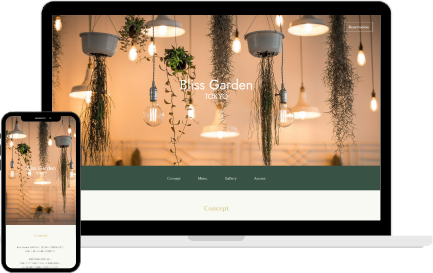

YUKA
IWANAGA
ABOUT
岩永 優香
Yuka Iwanaga
1985年11月生まれ、神奈川県出身。男の子3人の母。
幼少期から父の仕事で渡米し、高校卒業までアメリカ、カリフォルニア州で過ごす。
学習院大学を卒業後、金融企業に就職し、約3年間事務職として請求書発行、資金繰り管理、決算業務などに携わる。
子育てをしながら在宅ワークで社会復帰後、Webデザインに興味を持ち始める。2024年1月、インターネットアカデミーへ入学し、Webデザインやコーディングについて学ぶ。
SKILLS
WORKS
Portfolio
ポートフォリオサイト
| 制作期間 | 2024.11～ |
|---|---|
| 使用ツール | Photoshop / Figma / Visual Studio Code |
| ターゲット | ・夢や自己実現のために頑張っている人 ・Webを通して自身の価値を伝えたい人 |
| 目的 | 自分の経歴、スキルや強みを伝える |

Bliss Garden TOKYO
カフェレストランのサイト（架空サイト）
| 制作期間 | 2024.7～2024.9 |
|---|---|
| 使用ツール | Figma / Visual Studio Code |
| ターゲット | ・関東圏に住んでいる30～40代の女性 ・落ち着いたおしゃれな雰囲気が好きそうな大人の女性 |
| 目的 | ・客数や予約数を増やす ・お店の雰囲気や魅力を写真を通して伝える |
| デザイン | 落ち着いた雰囲気をイメージしていることから、深い緑色をテーマカラーに選び、アクセントとして文字や装飾にゴールドを取り入れました。 また、カジュアルな雰囲気よりも高級感を出すためにフォントも明朝体にしました。 予約もしてもらいやすいように、PC版でもスマホ版でも予約ボタンを固定して表示するようにデザインしました。お店の雰囲気がより伝わるよう、ギャラリーのセクションを設けました。 |